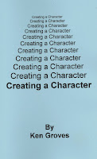

Puppeteer or Ventriloquist?
2/17/2010
By Ken Groves
Building a character is like building a house. You must have a strong foundation and basement. Then you add the first story and finish your house with roof and trim. If you are weak in any area of construction, it will show up in the finished product -- your character. So when building a character, start with a strong foundation and good basement. The foundation being good technique:
(a) Lip Control
(c) Manipulation
The layman's definition of a ventriloquist is "a person who talks without moving their lips, and makes the puppet seem alive." So give the audience what they expect. If you can't do that, you are a puppeteer -- not a ventriloquist.
* * * * * *
Taken from Ken Groves' book, Creating Your Character, which will be awarded on this blog later this week.
Building a character is like building a house. You must have a strong foundation and basement. Then you add the first story and finish your house with roof and trim. If you are weak in any area of construction, it will show up in the finished product -- your character. So when building a character, start with a strong foundation and good basement. The foundation being good technique:
(a) Lip Control
{kind=link}

(b) Voice clarity(c) Manipulation
The layman's definition of a ventriloquist is "a person who talks without moving their lips, and makes the puppet seem alive." So give the audience what they expect. If you can't do that, you are a puppeteer -- not a ventriloquist.
* * * * * *
Taken from Ken Groves' book, Creating Your Character, which will be awarded on this blog later this week.